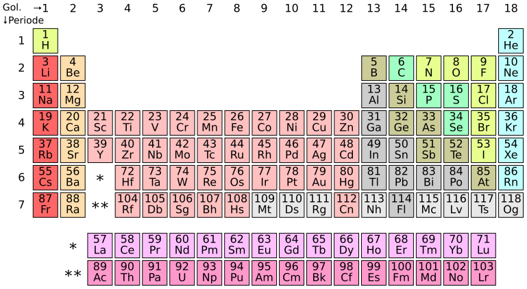

RUANG BELAJAR KIMIA
Jelajahi unsur, pahami sifatnya, dan temukan keterkaitan di balik tabel periodik.
MULAI DARI SINI
Pelajari karakter setiap unsur dari hidrogen hingga oganeson.
Temukan kelompok atom bermuatan yang sering muncul dalam reaksi.
Bandingkan logam, nonlogam, dan karakter unsur lainnya.
REFERENSI VISUAL
